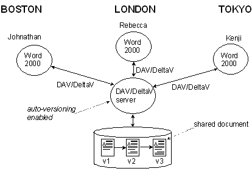
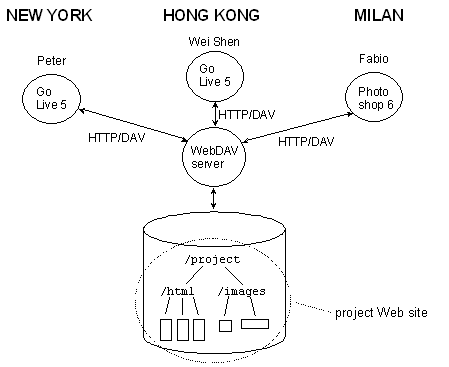

The rock-bottom paradigms of the computer world are simply traditions. Computer basics, as we teach them, are concerned with convention, not deep reality. Computers today basically simulate two things: hierarchy and paper. Hierarchy has been carefully put into the structure of computer files because those who did so considered it right and natural and the only way. Paper has been simulated in the structure of computers because it seemed right and natural and the only way. I believe both of these are forms of imprisonment that constrict and warp our work and our thinking. Adobe Acrobat and the World Wide Web simulate both hierarchy and paper- hierarchy on the left, paper on the right. Acrobat does this in a single package; the Web does it via the URL (which follows the domain name with a hierarchical directory path, then ends in a simulation of paper such as an HTML file). And both these formats glorify appearance over the management of content flow, representing, as it were, the triumph of typesetters over authors.
I would like to propose principled alternatives to both hierarchy and paper. First, a generalized non-hierarchical structure. If we are going to find an alternative cosmology to replace hierarchical directories, it had better be--
I think that I have found such a structure. It is both humorous and powerful.
In this cosmology, we build everything out of free-floating cells in n-dimensional space, and view them locally from the cursor outward-- spreadsheets let loose and unsprung. These cross-viewable multidimensional lists (trademarked as "ZigZag" in some places) provide an enjoyable new paradigm for all computer structures, with interesting new designs and models for input, viewing, interaction, data structures and programming. These include--
Most importantly, multiple dimensions yield surprising simplifications. These structures appear to streamline many aspects of data and programming, for several reasons--
Naturally, this has a number of applications for hypertext and hypermedia. I will demonstrate--
Projects based on this model are underway in Japan, Australia, Finland and the U.K. I hope to make it a whole operating system that does away with "applications" altogether.
Now as to documents. Project Xanadu, widely misunderstood, has always been about electronic documents with--
The specifics of the Xanadu model are extremely simple. First we establish a Content Layer-- a level of
All new content goes into this content layer, not into the virtual documents or versions themselves.
The rest is very straightforward.
That is the Xanadu model as we have worked on it for decades. Because it is so different from the conventional approaches, no implementations have been successful to date, though the 1988-92 designs (especially by Roger Gregory, Mark Miller and Eric Drexler) were brilliant. For nearly the last decade I have worked to adapt this model to the Internet. Recently, David Durand and I have come up with a new proposed format on this model that will be intercompatible with one-way HTML links, though in principle creating new islands of bidirectional connection (both links and transclusions). This format (tentatively called VLIT, Virtual Literary Format) will be presented here. It uses less intrusive forms of XML and XLINK to specify contents to be brought in and marked up. It requires both server scripting and on-board browser scripting within the file, since it must outwit the mechanisms that were designed from an opposite mentality.
It also needs special editors and will benefit from browser plug-ins and a deep caching mechanism for purchased content. This endeavor is considerably helped by the assumption that the issue of cleanly re-usable stabilized content-- content which is markup-free, delocalized and promised-- may be separated and handled by a number of alternative parallel means. These ideas may be disconcerting to those who have steeped themselves in today's special effects. I believe it will be very good news for authors, editors, and those concerned with the integrity, continuity and flow of content, and with the usability of copyrighted material.
WebDAV and DeltaV are application-layer network protocols that provide capabilities for remote collaborative authoring, metadata management, version control, and configuration management. Both protocols extend the core protocol of the Web, the Hypertext Transfer Protocol (HTTP 1.1). WebDAV adds operations for overwrite prevention, properties, and namespace management, while DeltaV builds upon WebDAV to offer versioning (checkout and checkin), autoversioning, workspaces, activities, and configuration management.
KEYWORDS: remote collaborative authoring, version control, configuration management
|
 |
| Figure 1 - Three collaborators, located at three different sites, are jointly authoring a document using the WebDAV capabilities of Microsoft Word 2000. The shared document is stored on a DeltaV server, with auto-versioning enabled, and hence the document is automatically versioned as the collaborators work. |
Consider the following Web site authoring, document collaboration, and software development scenarios:
A task force of people from geographically dispersed business units need to develop a report together. Throughout the report-writing process, this group needs to solicit feedback, and would like to keep a permanent copy of the exact report version they are having other people review (see Figure 1).
A home computer user wants to develop a Web site, but has no Unix shell or programming experience. Their Internet service provider (ISP) must host their Web site, since they do not have a server computer in their home, and the ISP limits up channel traffic. Furthermore, the ISP would prefer not to give out shell accounts, for security reasons.
A geographically diverse project team maintains their project’s Web site, allowing all project members to make Web site updates (see Figure 2).
A large corporate Web site needs to accept content contributions from any of the company’s geographically separate business units.
An open source project, comprised of team members from around the globe, is collaboratively developing a software application. They need to record all source code changes, as well as create stable baselines of their source code corresponding to public releases of the software. Furthermore, developers need to edit and compile source code on their local machine.
All of these scenarios have in common the need to remotely author and version Web pages, documents, and source code. Together, WebDAV and DeltaV provide an open, standards-based infrastructure that supports these scenarios.
|
 |
Figure 2 - WebDAV Web Site Collaboration. A team with members in New York, Hong Kong, and Milan collaboratively maintain their project’s Web site using a combination of WebDAV-enabled Web site authoring, and image authoring tools, in this case Go Live 5, and Photoshop 6. |
The WebDAV protocol supports the following capabilities:
Overwrite prevention:keeping more than one person from working on a document at the same time. This prevents the "lost update problem" in which modifications are lost as first one author, then another writes their changes without merging the other author's work.
WebDAV provides an exclusive write lock, which guarantees that only the lock owner can overwrite a locked resource, and a shared write lock, which allows a group of collaborators to work together on a resource. Locks automatically time out, easing administration of a WebDAV server.
Since WebDAV locks exist independent of a TCP connection, it is possible to take out a lock, work disconnected from the network, and then reconnect to submit editing updates. This type of work pattern is very useful for wireless networking, where network connections can frequently get dropped.
Properties: creation, removal, and querying of information about Web pages, such as its author, last modified date, etc. Also included is the ability to link pages of any media type to related pages.
WebDAV properties are (name, value) pairs where the value is a well-formed Extensible Markup Language (XML) document, thus permitting storage of a wide range of XML-tagged data. XML values provide typing via structured markup, extensibility from addition of new tags, and plug and play support for XML Linking (XLink) and Resource Description Framework (RDF) values.
Namespace management: The ability to copy and move Web pages within a server’s namespace, and the ability to create and list the contents of collections. Namespace management permits the creation of “Save As…” style dialog boxes found in most application software.
The DeltaV protocol builds upon WebDAV’s features and data model to provide the following capabilities:
Versioning: The ability to record important states in the evolution of a resource. DeltaV supports the basic checkout-edit-checkin style of version control. Additionally, autoversioning allows a server to automatically record revisions made by versioning unaware tools, such as those that only understand the WebDAV protocol. Comments may be recorded about a revision, and a listing of the predecessor and successor relationships can be retrieved.
Workspaces: A workspace is a location where a person can work in isolation from the ongoing changes made by all other collaborators working on the same set of resources. There are two broad classes of workspace, server-side and client-side. Server-side workspaces provide a portion of the server’s URL namespace for each collaborator. For example, an author named Uffe might have a workspace named /ws/ht01paper/uffe/. Client-side workspaces expect all collaborators to work in the same portion of the URL space. In both cases, clients are expected to replicate significant portions of the version history to a local store/filesystem for increased efficiency of file intensive operations, like compiles.
Activities: An activity represents a single logical change, tracking all the resources that were modified in the course of making the change. One use of activities is track several different logical changes made in a single workspace, and then selectively merge a subset of those logical changes to other workspaces. Activities are restricted to tracking only changes made on a single line of descent, and hence can be used to enforce versioning policies where each change must be on only one line of descent. Such a policy makes it easier to merge logical changes.
Configuration Management: The ability to record a snapshot of the current revisions of multiple resources. DeltaV provides operations to record the specific resource versions that comprise a workspace or a collection hierarchy, and automatically creates a by-reference copy of the snapshot in a portion of the server’s URL namespace. This makes each snapshot always available, even to versioning unaware clients.
Several insights guided the WebDAV and DeltaV work. It was assumed that people would not switch tools to gain the advantages of remote authoring. Furthermore, the best way to enable widespread support for remote collaborative authoring and versioning in everyday tools was to create a network protocol, rather than an application program interface (API). This approach has paid off: today there are many industrial strength clients and server supporting WebDAV. Supporting clients include Office 2000, Acrobat, Photoshop, Go Live 5, and Dreamweaver 4. WebDAV servers include Apache mod_dav, Microsoft IIS 5, Exchange 2000, and Sharepoint, Oracle Internet File System, Adobe In Scope, Xythos WebFile Server, and the W3C Jigsaw server.